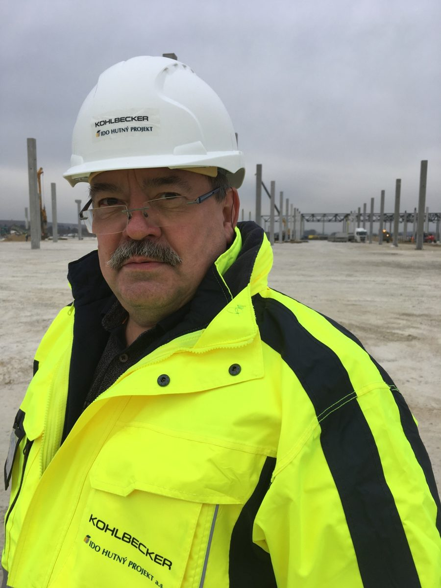

Znalecké posudky nehnuteľností na mieru, ktorým banky veria
Vypracuje Ing. Miroslav Gromada, súdny znalec, autorizovaný stavebný inžinier a projektový manažér s viac ako 40-ročnou praxou v stavebníctve. Vždy kvalitne, odborne a objektívne.
Skúsenosti, ktoré sa dajú zmerať
Ponúkam širokú škálu znaleckých posudkov
Pre rôzne fyzické aj právnické osoby stanovujem všeobecnú hodnotu bytov, bytových domov, nehnuteľností a stavieb, pozemkov, ako aj hodnotu nájmu či vecných bremien. K vyhotoveniu posudkov pristupujem vždy zodpovedne a profesionálne z pozície certifikovaného znalca. Stačí si vybrať oblasť Vášho záujmu:
Rodinné domy a byty
Posudky pre rodinné domy, bytové domy, byty a nebytové priestory.
Pozemky
Stanovenie hodnoty stavebných či poľnohospodárskych pozemkov.
Rekreačné objekty
Chaty, chalupy a rekreačné zariadenia vrátane objektov v horských oblastiach.
Komerčné a výrobné stavby
Administratívne budovy, výrobné haly, skladovacie prevádzky, stavby pre energetiku, hotely, zdravotnícke či kultúrne zariadenia a ďalšie.
Vecné bremená a nájom
Ocenenie ťarchy na nehnuteľnosti, napríklad práva prechodu cez pozemok či uloženia inžinierskych sietí. Stanovenie obvyklej výšky nájmu.
Odborné posúdenia
Odborné posúdenia technického stavu stavieb aj mimo režimu znaleckého posudku. Posudok ako podpora pre obchodné rozhodnutia.
Štyri kroky k odbornému posudku
Prvý kontakt a konzultácia
Zavolajte mi alebo napíšte. Preberieme účel posudku a potrebné podklady, ako list vlastníctva, projektovú dokumentáciu či kolaudačné rozhodnutie.
Fyzická obhliadka nehnuteľnosti
Dohodneme si termín. Na mieste spracujem technický popis, zameranie skutočného stavu a podchytím detailnú fotodokumentáciu.
Vypracovanie Vašej objednávky
Na základe podkladov a obhliadky vypracujem posudok v dohodnutom termíne a v súlade s platnou legislatívou. Všetko kvalitne, odborne a objektívne.
Finálne odovzdanie dokumentu
Posudok autorizujem kvalifikovaným elektronickým podpisom a zasielam elektronicky. Na vyžiadanie je možné tlačené vyhotovenie.
Cena dohodou, bez prekvapení
Výsledná cena závisí od typu a veľkosti nehnuteľnosti, regiónu, účelu posudku, dostupnosti podkladov, ako aj pracnosti posudku a časovej náročnosti jeho vyhotovenia. K výslednej kalkulácii sa viaže znalečné podľa vyhlášky MS SR č. 491/2004 Z. z., avšak v praxi sa najčastejšie dohodneme na zmluvnej odmene podľa zákona č. 382/2004 Z. z. Pre ďalšie informácie a orientačný návrh ceny ma neváhajte kontaktovať ešte dnes.
Ing. Miroslav Gromada

Po úspešnom ukončení vysokoškolského štúdia na Stavebnej fakulte SVŠT v Bratislave, odbor Pozemné stavby, v roku 1980 som nasledujúcich 20+ rokov pôsobil v projekcii. Istú dobu som sa venoval projektovému manažmentu, až do roku 2006, keď som konečne zakotvil vo vodách súdnoznaleckej činnosti. V rokoch 2006 – 2018 som navyše pôsobil ako certifikovaný projektový manažér IPMA/SPPR v stavebnej oblasti. Za tie dlhé roky som sa podieľal na riadení mnohých väčších projektov doma na Slovensku aj v zahraničí.
Počas svojej dlhej kariéry som si hrdo vybudoval cestu od radového projektanta až po riaditeľa a konateľa vlastnej projekčnej spoločnosti. Medzi moje významné projekty na Slovensku patria modernizácia a nová výstavba kompresorových staníc na prepravu zemného plynu vo Veľkých Kapušanoch, v Jabloňove nad Turňou, vo Veľkých Zlievcach, v Ivanke pri Nitre a v Plaveckom Petre, realizácia atómových elektrární v Mochovciach a v Temelíne (ČR) či výstavba vybraných objektov automobilky Jaguar Land Rover v Nitre. Zo zahraničných skúseností sú mi najcennejšie výstavba kompresorovej stanice plynu v Turkmenistane, rekonštrukcia 1 200 km plynovodu s kompresorovými stanicami v Saudskej Arábii, realizácia 3. bloku atómovej elektrárne Olkiluoto vo Fínsku a realizácia hotela Radisson v meste Alušta na Kryme.
Ako aktívny dôchodca sa v súčasnosti popri rekonštrukcii domu a záhradkárstve venujem svojej rodine, zatiaľ čo pracovne sa vyžívam naplno v znaleckej činnosti a príprave posudkov pre širokú škálu klientov.
Odborné oprávnenia
Súdny znalec
Riadne evidovaný v zozname znalcov Ministerstva spravodlivosti SR, odbor Stavebníctvo: odhad hodnoty nehnuteľností, pod číslom 914088.
Autorizovaný stavebný inžinier
Autorizácia SKSI na komplexné architektonické a inžinierske služby a súvisiace technické poradenstvo.
Projektový manažér IPMA
Certifikovaný manažér komplexných projektov, IPMA stupeň B (2006 – 2018).
„Štyridsať rokov v stavebníctve ma naučilo, že za každou stavbou treba vidieť ľudí, ktorým má slúžiť."— Ing. Miroslav Gromada
Kontaktné informácie
Potrebujete vypracovať kvalitný znalecký posudok? Neváhajte sa na mňa obrátiť e-mailom alebo telefonicky, ideálne v pracovných dňoch v čase medzi 9.00 – 18.00. Pre Váš akýkoľvek dotaz využite kontaktný formulár.
Mobilný telefón
Fakturačné údaje
Ing. Miroslav Gromada
Vodárenská 1941/71
058 01 Poprad-Veľká
IČO: 37882953
DIČ: 1022657724
Pôsobnosť
Poprad a celé Slovensko
Formulár